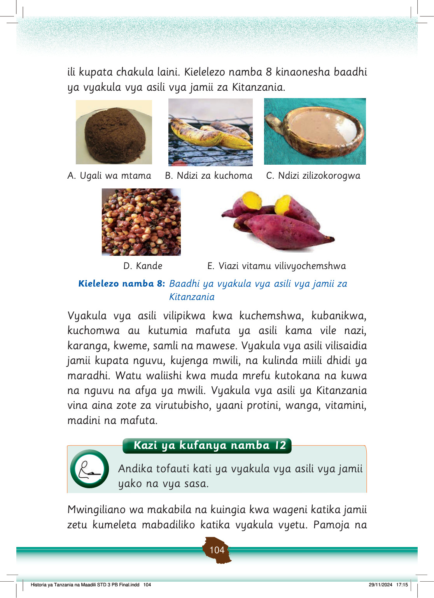

mabadiliko hayo, jamii zetu zinapaswa kuthamini vyakula vyetu vya asili.
Kula vyakula vya asili husaidia kudumisha utamaduni wetu.
Pia, ni kiashiria cha kuwa wazalendo.
Michezo
Jamii zetu pia zina michezo ya asili.
Baadhi ya michezo ilihitaji kutumia nguvu.
Michezo hiyo ni mieleka, kuvuta kamba, masumbwi, kuruka kamba, mbio, rede na bao.
Michezo hii ilichezwa ili kufanya mazoezi na kudumisha uhusiano na urafiki.
Kielelezo namba 9 kinaonesha baadhi ya michezo ya asili.
Watoto wanacheza kuruka kamba. Mtoto mmoja anaruka huku wenzake wakizungusha kamba.
A. Kuruka kamba
Watoto wanacheza bao wakiwa wamezunguka ubao wa mchezo. Wanaangalia na kuhesabu mbegu kwa makini.
B. Kucheza bao
Watoto watatu wanacheza mdako kwenye nyasi. Mmoja anatupa kokoto huku wenzake wakitazama.
C. Mdako.
Watoto wanacheza rede katika uwanja wa wazi. Mtoto mmoja anatupa kitu kuelekea chupa huku wengine wakikimbia.
D. Rede
Kielelezo namba 9: Michezo mbalimbali ya asili
Kazi ya kufanya namba 13
Fanya uchunguzi kuhusu michezo ya asili iliyopo katika maeneo unayoishi, kisha andika namna ya kuiendeleza.